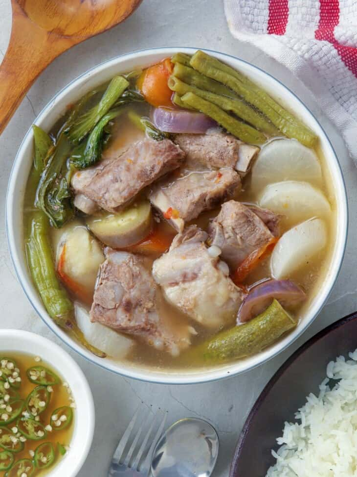

CHICKEN ADOBO
A classic Filipino dish featuring tender chicken
simmered in a savory sauce of soy sauce,
vinegar, garlic, and peppercorns.
It's a comforting and flavorful meal that's often served with rice.
INGREDIENTS
- 2 tablespoons vegetable oil
- 1 (3 pound) chicken, cut into pieces
- 1 large onion, quartered and sliced
- 2 tablespoons minced garlic
- ⅔ cup low sodium soy sauce
- ⅓ cup white vinegar
- 1 tablespoon garlic powder
- 2 teaspoons black pepper
- 1 bay leaf
- STEP 1: Heat vegetable oil in a large skillet over medium-high heat.
Cook chicken pieces until golden brown, 2 to 3 minutes per side.
Transfer chicken to a plate and set aside. - STEP2: Add onion and garlic to the skillet;
cook until softened and brown, about 6 minutes. - STEP3: Pour in soy sauce and vinegar and season with garlic powder, black pepper, and bay leaf.
- STEP 4: Return chicken to pan, increase heat to high, and bring to a boil.
Reduce heat to medium-low, cover, and simmer until chicken is tender and cooked through, 35 to 40 minutes.
INSTRUCTIONS
| Nutrient | Amount per serving |
|---|---|
| Fat | 4.93g |
| Carbohydrates | 2.48g |
| Protein | 11.88g |
| Iron | 1.05mg |
| Potassium | 147mg |
| Calcium | 14mg |
| Total Sugars | 15g |
| Protein | 26g |
| Vitamin C | 45g |
| Calcium | 80mg |
| Iron | 5mg |
| Potassium | 897mg |
TINOLANG MANOK
A light and flavorful chicken soup with ginger, onions, and green leafy vegetables. It's a popular comfort food, especially during the rainy season.
INGREDIENTS
- 1 tbsp cooking oil
- 1 pc onion, quartered
- 1 (2 - inch) ginger, sliced
- 1/2 kg chicken, cut into serving pcs.
- 1 tbsp patis
- 1 cup evaporated Milk
- 1 cup water
- 120 g. sayote or ¼ pc. papaya, cut into wedges
- 1 pc Knorr Chicken Cubes
- 1/2 bunch dahon ng sili
- Heat pot on medium-high, sauté onion & ginger, add chicken, sprinkle fish sauce.
- Add sayote, evaporated milk, water, ginger. Simmer, add Knorr Chicken Cubes.
- Finish by topping with dahon ng sili.
- Enjoy the warm, comforting hug of mom with each sip of White Tinola.
INSTRUCTIONS
| Nutrient | Amount per serving |
|---|---|
| Total Fat | 36g |
| Saturated Fat | 12g |
| Cholesterol | 86g |
| Sodium | 1168mg |
| Total Carbohydrate | 25g |
| Dietary Fiber | 4g |
| Total Sugars | 15g |
| Protein: | 26g |
| Vitamin C | 45g |
| Calcium | 80mg |
PORK SINIGANG
A sour and savory soup featuring pork, vegetables, and a souring agent like tamarind or guava. It's a hearty and flavorful dish that's perfect for a cold day.

INGREDIENTS
- Pork -while you can use meatier and leaner parts such as pork shoulder (kasim),
I recommend bony cuts such as spare ribs, pork belly with ribs, hocks, knuckles, and tailbone or neck bones for better flavor. - Tomatoes- use ripe, juicy tomatoes
- Onion-peeled and quartered
- Fish sauce- brings umami flavor; you can swap it with salt if you prefer
- Gabi- adds a starchy component to the dish and thickens the broth
- Radish (labanos)
- Vegetables- the recipe uses sitaw (long beans), eggplant, okra, and bok choy,
but feel free to include other local produce available such as kangkong (water spinach) and pechay - Tamarind- can be fresh pods, paste, or powder mixes
- Banana or finger chili peppers (siling haba)-adds a mild heat; optional and can be omitted.
- Wash tamarind pods under cold, running water to remove any grit or dirt from the skins.
- Place in a saucepan with about 1 cup water and bring to a boil.
- Cook for about 4 to 5 minutes until soft, and the outer skins begin to burst.
- Using a fork, mash the tamarinds to release the pulp.
- Place the tamarind and liquid in a fine-mesh strainer set over a bowl.
Continue to mash with a fork, returning some of the liquid into the strainer once or twice to fully extract the juice. - Discard seeds and skins. Pour tamarind juice into the pot.
INSTRUCTIONS
| Nutrient | Amount per serving |
|---|---|
| Total Fat | 12g |
| Saturated Fat | 4.4g |
| Cholesterol | 68mg |
| Sodium | 52.7mg |
| Potassium | 359.6mg |
| Total Carbohydrate | 0g |
| Dietary Fiber | 4g |
| Protein | 23g |
PANCIT BIHON
A thin rice noodle dish stir-fried with vegetables, meat, and a savory sauce. It's a versatile dish that can be customized with different ingredients.
INGREDIENTS
- 1 (12 ounce) package dried rice noodles
- 1 teaspoon vegetable oil
- 1 onion, finely diced
- 3 cloves garlic, minced
- 2 cups diced cooked chicken breast meat
- 1 small head cabbage, thinly sliced
- 4 carrot, thinly sliced
- ¼ cup soy sauce
- 2 lemons - cut into wedges, for garnish
- Gather all ingredients.
- Place rice noodles in a large bowl; cover with warm water and let soften for 8 to 10 minutes.
Drain and set aside. - Meanwhile, heat oil in a wok or large skillet over medium-low heat. Add onion and garlic;
cook and stir until onion is tender, about 3 to 5 minutes.
Stir in chicken, cabbage, carrots, and soy sauce. Cook until cabbage begins to soften. - Toss in noodles and cook, stirring constantly, until heated through.
- Transfer pancit to a serving dish and garnish with lemon wedges.
INSTRUCTIONS
| Nutrient | Amount per serving |
|---|---|
| Protein | 19g |
| Cholesterol | 36mg |
| Sodium | 1,709mg |
| Vitamin A | 540mcg |
| Vitamin C | 16mg |
| Calcium | 80mg |
| Iron | 2.3mg |
FRIED CHICKEN
Crispy, juicy fried chicken seasoned with a blend of Filipino spices. It's a popular street food and a favorite among Filipinos.
INGREDIENTS
- 1 (4 pound) chicken, cut into pieces
- 1 cup buttermilk
- 2 cups all-purpose flour for coating
- 1 teaspoon paprika
- salt and pepper to taste
- 2 quarts vegetable oil for frying
- Take your cut up chicken pieces and skin them if you prefer.
- Put the flour in a large plastic bag
(let the amount of chicken you are cooking dictate the amount of flour you use).
Season the flour with paprika, salt and pepper to taste (paprika helps to brown the chicken). - Dip chicken pieces in buttermilk then, a few at a time, put them in the bag with the flour,
seal the bag and shake to coat well. - Place the coated chicken on a cookie sheet or tray,
and cover with a clean dish towel or waxed paper.
LET SIT UNTIL THE FLOUR IS OF A PASTE-LIKE CONSISTENCY. THIS IS CRUCIAL! - Fill a large skillet (cast iron is best) about 1/3 to 1/2 full with vegetable oil. Heat until VERY hot.
- Put in as many chicken pieces as the skillet can hold. Brown the chicken in HOT oil on both sides.
- When browned, reduce heat and cover skillet; let cook for 30 minutes (the chicken will be cooked through but not crispy).
Remove cover, raise heat again, and continue to fry until crispy. - Drain the fried chicken on paper towels. Depending on how much chicken you have,
you may have to fry in a few shifts.
Keep the finished chicken in a slightly warm oven while preparing the rest.
INSTRUCTIONS
| Nutrient | Amount per serving |
|---|---|
| Total Fat: | 12g |
| Cholesterol : | 87mg |
| Sodium: | 77mg |
| Potassium | 239mg |
| Total Carbohydrate | 1.8g |
| Dietary Fiber | 0.1g |
| Sugars | 0g |
| Protein: | 30g |
BAGNET KAREKARE
A rich and flavorful stew featuring crispy pork belly,
vegetables, and a peanut-based sauce.
It's a hearty and satisfying dish
that's often served with bagoong (shrimp paste).
INGREDIENTS
- 150 g Pork belly slab, important that it has nice fat to meat ratio, has skin, 3 pcs of 500g
- 250 ml Water
- 6g Knorr Pork Broth Base 1.5kg
- 4 ml Fish Sauce
- 1 g Rock Salt
- 0.20 g Bay Leaf, 3 pcs
- 2 g Lemongrass, 2 pcs, bruised and tied to a knot
- 4 g White Onion, quartered, 2pcs
- 0.20 g Black Peppercorn
- 6 ml Oil, optional, from frying other protein
- 100 ml Vegetable Oil, for frying
- 6 ml Annatto Oil
- 4 g Tomatoes, seeded, chopped
- 8 g White Onion, chopped
- 4 g Garlic, chopped
- 1500 Ml Reserved Pork Stock, From Cooking Bagnet
- 50 g Lady's Choice Peanut Butter Creamy 1kg
- 5 g Brown Sugar
- 3 ml Annatto Oil
- 120g Bagnet Style Pork Belly, See Recipe
- 150g Kare-Kare Sauce, See Recipe
- 6 g Blanched Mixed Vegetables, string beans, cabbage, eggplant
Kare-Kare Sauce Preparation
Bagnet Kare-Kare Assembly (for 1 serving)
- Rinse and clean well the pork belly under running water. If it's bone-in, try to make some incisions in-between the bones.
- Place everything in the pressure cooker, cover with the lid and secure by locking.
Bring to a boil and when it whistles, lower the heat just to maintain the whistle and continue cooking for 30 to 45 minutes.
or until the meat is very tender. - As soon as you release the steam, you may now open the lid carefully.
Let it cool together with the stock to absorb more of the flavor.
Remove the meat from the stock and place in a rack. Reserve the strained stock. - If you have a Jaccard, you may poke the pork skin several times (optional).
- Let it dry in room temperature at least 1 hour then place inside the chiller uncovered to continue the drying for another hour.
- Remove the pork belly slab from the chiller in ambient temperature.,
Meanwhile, pour oil in the deep-frying pot (do not go more than 1/2 of the pot to avoid overflowing during frying)
and heat the oil until it reaches 120-130ᵒC or in low to medium heat. - Blanch fry the pork slabs for 5 to 8 minutes.
Make sure that it is completely submerged in the hot fat and forms small blisters, but not fully crispy yet. - Remove the fried pork from the oil and drain well.
Place in a rack, skin side-up then set aside to cool down properly. - lean the oil in the pot by straining impurities of fallen meat.
- In the same frying pot of oil, apply high heat until your temperature reaches 180-220ᵒC
(you can already see smoke from your pot of oil), and submerge your pork belly slabs. - Cook for 2 to 3 minutes only to avoid bitter taste and darkening.
If done right, there will be big and small blisters on the belly skin. - Let it rest for 5 to 10 minutes before carving to achieve maximum crispiness of your bagnet.
- Add oil to the pot. Sauté tomatoes, onions, and garlic.
- Add the reserved stock, bring to a boil then simmer for 10 minutes.
- Optional to put everything in a blender for better flavor and consistency, then bring everything back to the pot.
- Add now the peanut butter and brown sugar. Mix well with a wire whisk. Bring to a boil then simmer for another 10 minutes.
- Adjust the color by adding annatto oil.
INSTRUCTIONS
Kare-Kare Sauce Preparation
Bagnet Kare-Kare Assembly (for 1 serving)
- Assemble the bagnet and kare-kare sauce in a shallow plate.
- Serve the bagnet kare-kare immediately while hot.
Best enjoyed with bagoong on the side.
| Nutrient | Amount per serving |
|---|---|
| Carbohydrates | 70.4g |
| Proteins | 22.5g |
| Fat | 36.3g |
| Dietary Fiber | 3.3 |
| Calcium | 165.7mg |
| Iron | 4.8mg |
| Sodium | 321.3 |